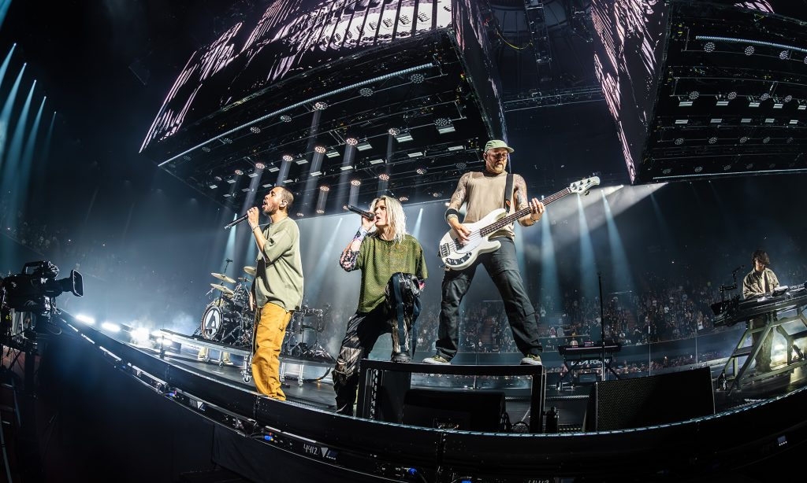
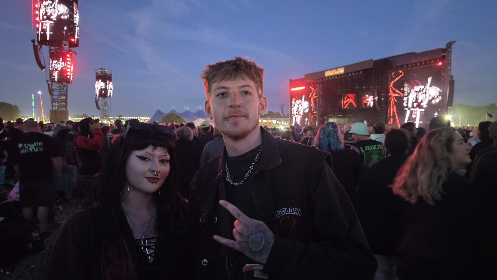
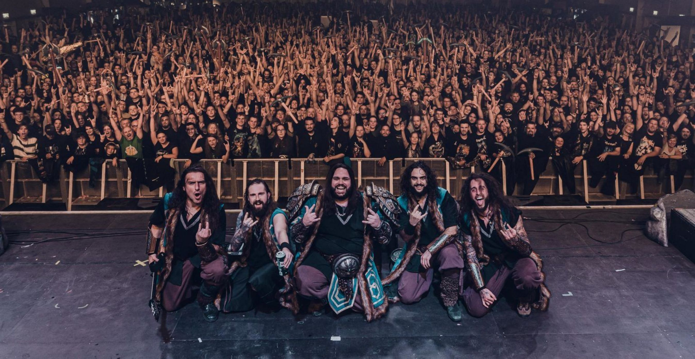
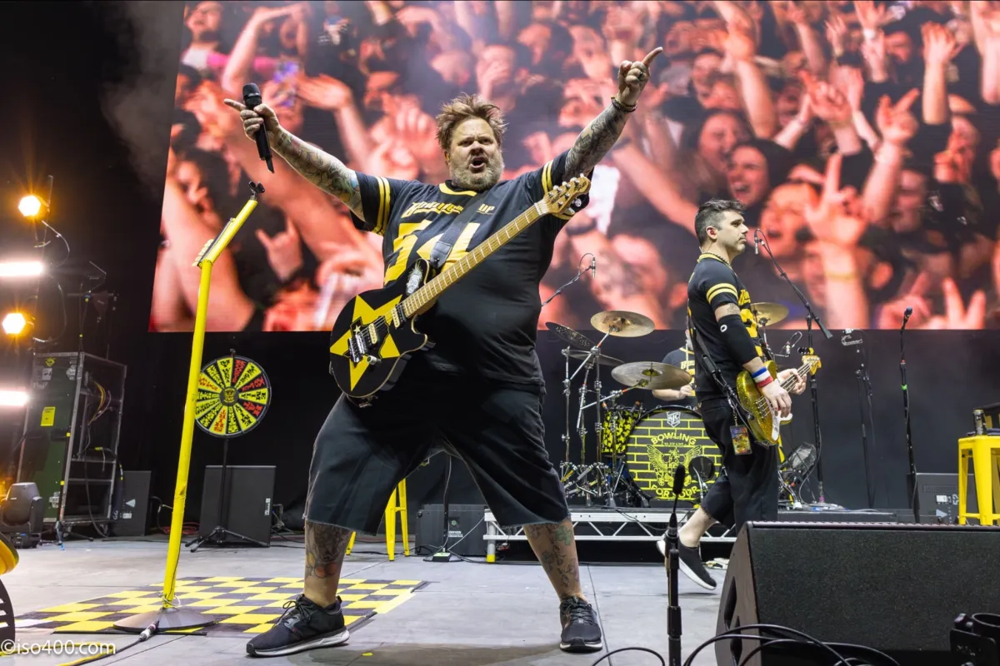
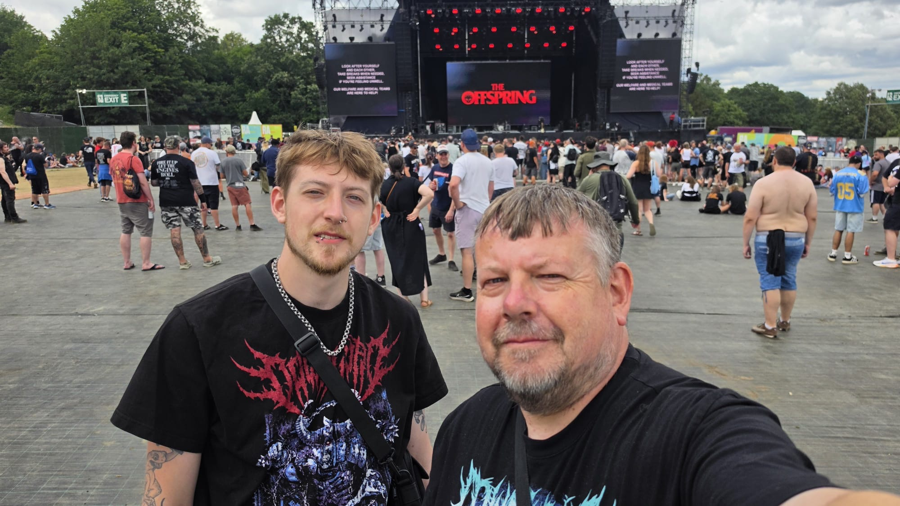
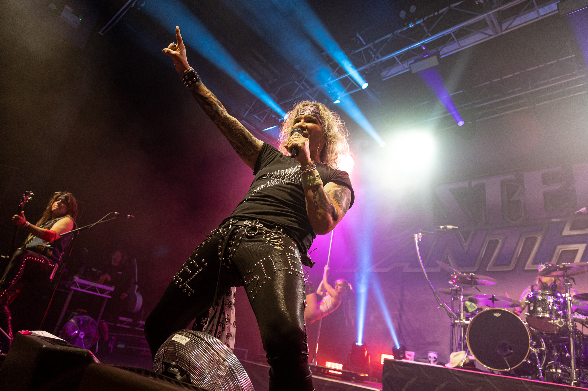

By James Rhys

Reviewed by James Rhys!
Download Festival 2026 was amazing!
From start to finish, the atmosphere was incredible. The lineup was packed with amazing bands, the crowds were full of energy, and there was that unmistakable Download feeling everywhere you went. Whether you were right at the barrier, throwing yourself around in the pit, or just chilling with a beer and taking it all in, there was something for everyone.
The performances were a huge highlight, with plenty of unforgettable moments and sets that had the whole crowd singing along. The festival site had a brilliant atmosphere throughout the weekend, and despite the inevitable mud, queues and tired legs, it was all part of the experience!
10/10 — would absolutely do it all again.
Reviewed by James Rhys!
AC/DC at Wembley was everything you could want from a rock ’n’ roll show: deafening, ridiculous, exhilarating and completely unapologetic. After decades on the road, the band proved that age may slow the body down, but it certainly hasn’t killed the spirit of rock ’n’ roll.
From the moment Angus Young appeared in his trademark schoolboy uniform, the atmosphere inside Wembley was electric. The setlist was packed with classics, including “Back in Black,” “Thunderstruck,” “Hells Bells,” “Shoot to Thrill,” “Highway to Hell” and “Whole Lotta Rosie.”
With 21 songs in total, there was barely a moment when the crowd wasn’t singing along.9/10 A solid performance from rock legends.

Reviewed by James Rhys!
Wind Rose live in London in 2024 was an absolutely epic night! From the moment they hit the stage, the energy was insane. Wind Rose know exactly how to put on a show, combining huge folk-metal riffs with catchy choruses, powerful vocals and plenty of dwarven madness.
crowd were completely up for it, singing, shouting and throwing themselves into every song.
The atmosphere was one of the best things about the night. There was a real sense of everyone being there for the same reason to have a good time, raise a tankard and enjoy some seriously fun metal.
The band were clearly loving it too, feeding off the crowd and delivering a performance that felt both massive and personal.
And of course, hearing songs like Diggy Diggy Hole live with a packed London crowd was something special. It was impossible not to join in!
A brilliant performance from a band who understand that metal can be heavy, theatrical and ridiculously fun all at the same time. Wind Rose absolutely conquered London that night. 10/10!!!

Reviewed by James Rhys!
Bowling for Soup at the Brighton Centre in 2024 was an amazing, fun filled night! There’s something about seeing Bowling for Soup live that instantly puts you in a good mood, and this show was no exception. The atmosphere was brilliant, with the whole crowd singing along, laughing, jumping around and generally having the time of their lives. The band were fantastic live — energetic, hilarious and completely at ease on stage. They had the crowd eating out of the palm of their hands, mixing huge pop-punk anthems with plenty of jokes and banter. It felt less like watching a band and more like spending an evening having a massive party with some old friends. Hearing classics like 1985, Girl All the Bad Guys Want and The Bitch Song live was a real highlight, with the Brighton crowd giving them everything they had. There was a brilliant mix of nostalgia and pure fun throughout the night. Bowling for Soup proved once again that you don't need to take yourself too seriously to put on an unforgettable rock show. The Brighton Centre was full of smiles, loud singing and people reliving their pop-punk years — and honestly, what more could you want? An incredibly fun night from a band who know exactly how to entertain.
10/10 — absolutely brilliant. Would happily see them again!

Reviewed by James Rhys!
What an incredible night watching The Offspring live at Crystal Palace! From start to finish, the atmosphere was absolutely brilliant — cheerful, loud and full of energy. You could really feel how much the crowd were enjoying themselves, with everyone singing, jumping and soaking up every minute.
The Offspring sounded fantastic live, bringing all the energy and attitude you’d expect from them. There were so many great moments throughout the set, but Pretty Fly (For a White Guy) was definitely the highlight for me. Hearing the whole crowd singing along to it was something else!
8/10 Brillant show and a solid venue

Reviewed by James Rhys!
Steel Panther absolutely brought the party to the UEA LCR in Norwich! From the moment they stepped onto the stage, the place was buzzing. The atmosphere was loud, lively and full of energy, with the crowd clearly ready for a night of proper rock 'n' roll entertainment.
Steel Panther were everything you’d expect — outrageous, hilarious and full of energy. They put on a brilliant show, with huge riffs, plenty of laughs and a performance that kept everyone entertained from start to finish.
10/10 A great show with plenty of laughs!